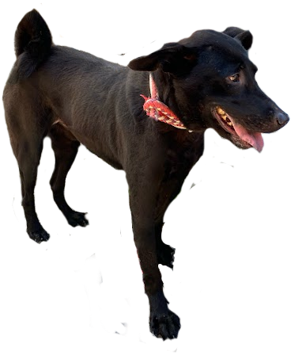

Ima
Ima
My Dog: AoAo

1. Name: AoAo
2. serial number: B5
3. Sex: male
4. actual background story:
AoAo was a stray dog, the reason that he is in the shelter is because he chase the car and barks at the
pedestrian.
Let me introduce you to AoAo, a confident and graceful dog with a strong and loyal heart. He has a calm but
powerful presence that makes him stand out. Even though we don’t know much about his background, AoAo shows
great character and intelligence. He is the kind of dog that can quickly become a meaningful companion in
your life.
Adopting AoAo is a good choice if you want a dog that can protect you and your home. He is strong and always
alert, so he can help keep you safe. He is also very loyal, so he will build a strong relationship with his
owner. He may need some training to behave better around people, but with time and patience, he can become a
very good and reliable pet.
AoAo is not only a strong dog, he is also a good companion who can make you feel safe and cared for. Imagine
going home after a long day and seeing a loyal friend waiting for you. He will stay by your side. Maybe his
past is not perfect, but he still needs a loving home. If you adopt AoAo, you not only get protection, but
you also give him love and a chance to love you back.